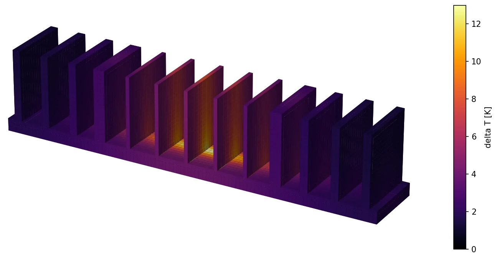
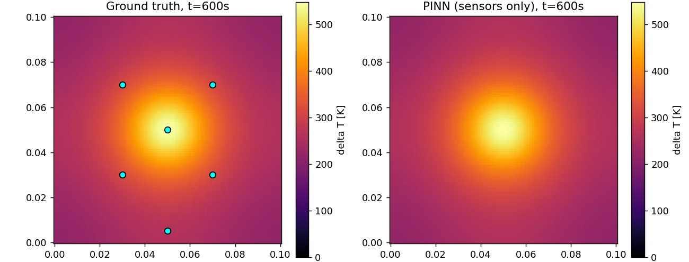
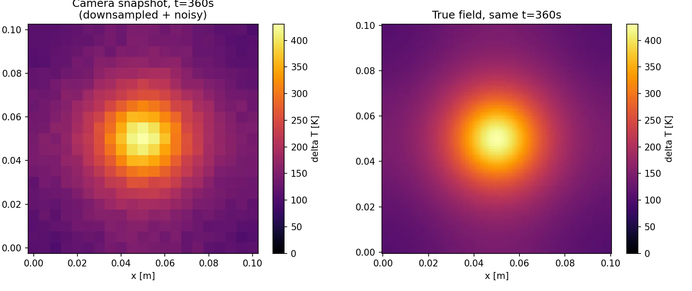
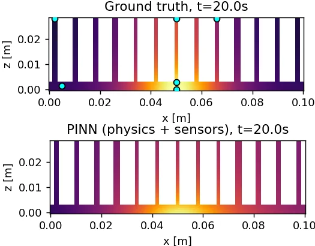

Rebuilding a temperature field from six sensors, with physics as the teacher
A physics-informed neural network that reconstructs a transient temperature field from sparse point sensors and noisy low-resolution camera frames. The heat equation and convective boundary conditions are part of the loss. I checked every result against finite-difference solvers I wrote myself, first on a 2D plate and then on a 3D finned aluminum heat sink.

Six sensors are enough when the physics is right
With only six point sensors plus the heat equation, the network reconstructs the whole plate. Ten minutes into heating, its error is within about 0.3% of the field's range. The physics fills in everything the sensors can't see.

Adding a second modality made it worse
I trained the same network three ways: sensors only, camera only, and both fused. Fusion helped early in the transient (0.39 K vs 0.53 K at 88 s). Later on, the noisy camera pulled the fit toward its own noise, and sensors alone came out ahead (0.25 K vs 0.53 K at 600 s).
A second modality only pays off when it fills a gap the stronger one can't see. That question drives my PhD work too.

show data
| condition | 88 s | 299 s | 600 s |
|---|---|---|---|
| sensors only | 0.53 K | 0.22 K | 0.25 K |
| camera only | 0.77 K | 0.81 K | 0.91 K |
| fused | 0.39 K | 0.31 K | 0.53 K |
The loss curve said it worked. It hadn't.
On the heat sink, physics-only training converged with clean loss curves, yet the fins never warmed above 0 K. The heat source is a 1.5 mm spot in a 28 mm domain split across 13 fins. Random collocation points almost never landed on it, so a cold field satisfied the equation nearly everywhere the network checked.
Concentrating samples at the source and adding six virtual sensors cut max error from ~11 K to ~4 K on a field that peaks near 13 K. That's still imperfect, and the figure shows where: the outer fins run warm.
